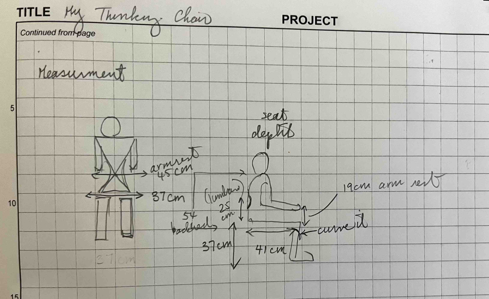

<br>
<h4>The Thinking Chair: CNC</h4>
<br>
I got it into my head I want to build a custom press fit chair. This is crazy given the compressed time and the other projects I am trying to iterate. But once it was in my head, I couldn't get it out. So we go on another exploration, against my rational brain...
This idea didn't come from no where. The internet is a dangerous place and the inspiration came from looking at a couple of these sources. Yes, I'm putting the blame for the crazy of idea of building a chair on these influences.
<ul>
<li>https://www.pinterest.com/sarahk8ty/press-fit/</li>
<li>https://www.behance.net/BGD</li>
<li>https://www.ifitshipitshere.com/awesome-animal-furniture/</li>
<li>http://fab.cba.mit.edu/classes/863.13/people/alice/week5.html</li>
</ul>
In particular, Boris Goldberg's design was beautiful and made me look more into the living hinge technique. I had seen some samples lying around the Harvard lab but up until now, I had not the courage to consider trying to do something like this. But give my brain a little victory in some areas and it starts to believe that all is possible again - my body and sleep schedule groan. Here's a great video on the topic: https://www.youtube.com/watch?v=JSlRusl7UPc.
With some of these ideas, I decided to make this chair personal to me and so I did some research on ergonomics of chairs. Using some of the information I found on these websites, I took my own measurements for the chair.
<ul>
<li>https://www.seatingmatters.com.au/how-to-take-accurate-measurements-for-a-new-seating-matters-chair/</li>
<li>https://www.healthyworkstations.com/resources/ergo/TakingMeasurements.pdf</li>
</ul>

<figcaption>Measurements for my personal chair. Given my shorter than average stature, chairs usually feel a little too big for me. This is an opportunityt make a chair that fits me just right.</figcaption>
<img src="02_CNC_ChairBackAngles_Stark_July19.jpg" class="photo" alt="Angles">
<figcaption>I also wanted this chair to be a place I could think, draw, and read in my art studio, so I do want some angle to it and not have it be a desk-type task chair. It was hard for me to measure what angle I would need tha back to be so instead I looked around the place I am staying at for the summer and picked the chair that I thought moved in that direction as a starting point. Looking at this chair also make me think of the angle of the seat and also whether I would have cushions. While I like the idea of cushions, given this will be in a semi-outdoor part of the art studio, the courtyard space, I was concerned cushions may attract outdoor wild life to nest in it. The preference would be to design a chair that would comfortable to sit in without any cushions. I also found this great reference: https://www.monsiegeamoi.com/blog/en/2020/01/06/the-ideal-angles-for-a-chair/.</figcaption>